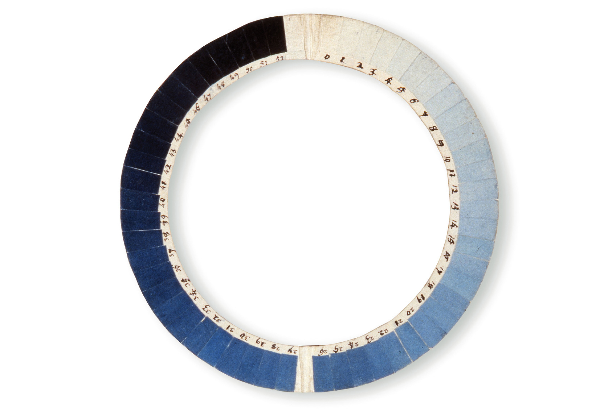

XXth Chilean Biennial:"Byblos Blue"
VALPARAISO, CHILE

Jobson, Christopher. "The Cyanometer Is a 225-Year-Old Tool for Measuring the Blueness of the Sky". Colossal(blog).May 9, 2014.

"Byblos Blue" Installation at the XXth Chilean Architecture and Urbanism Biennial: "Dailogos Impostergables"